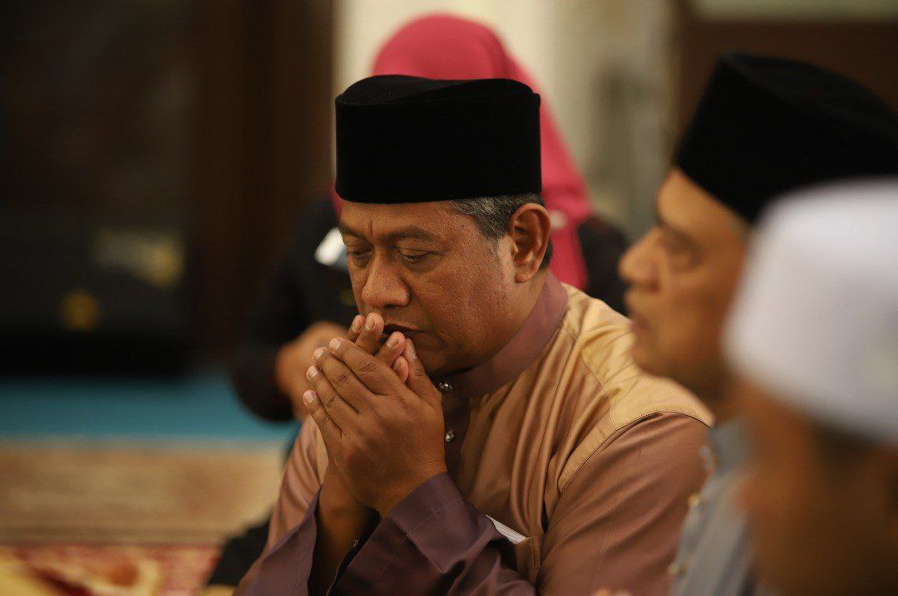
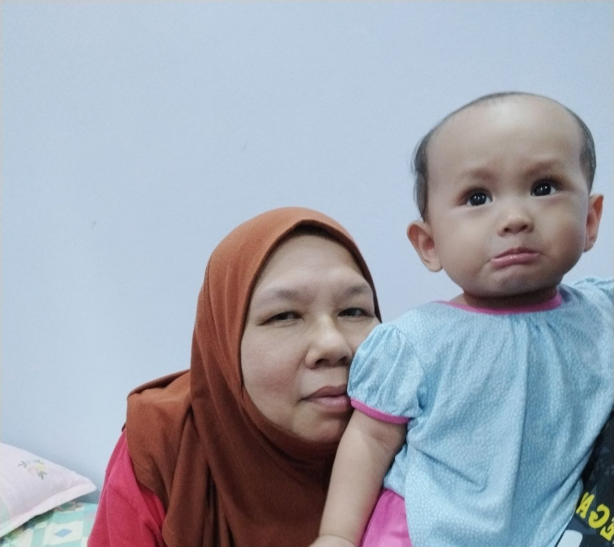
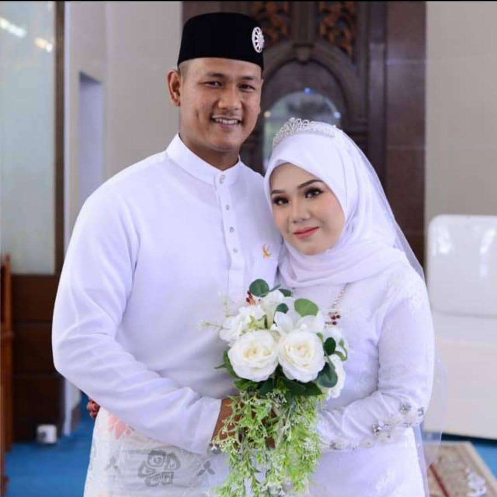
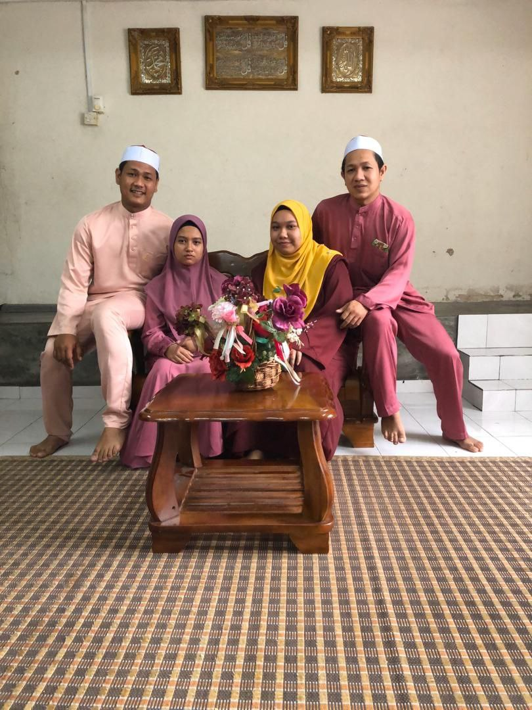
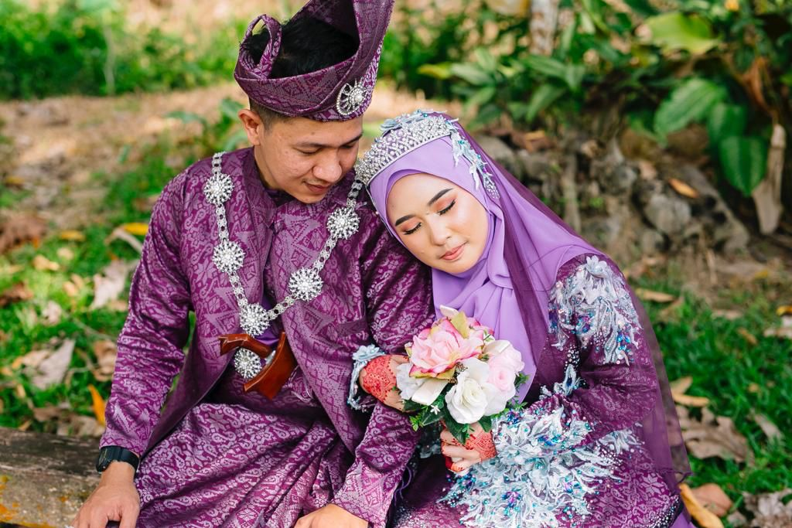
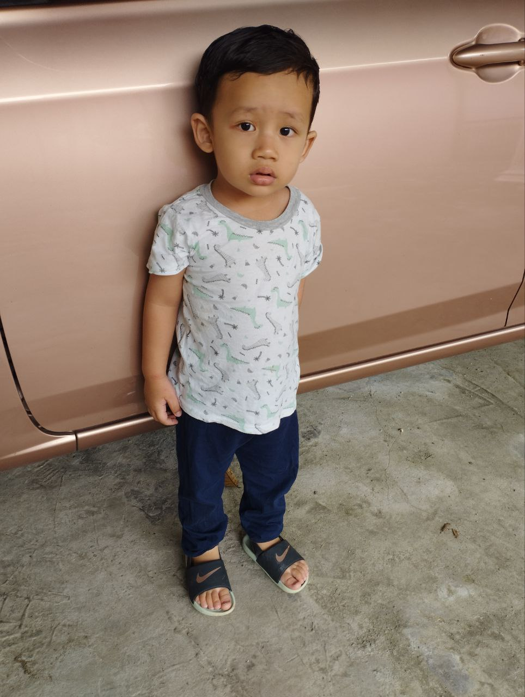
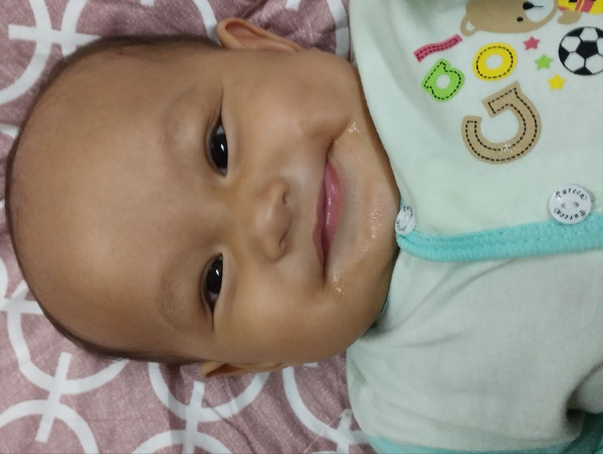
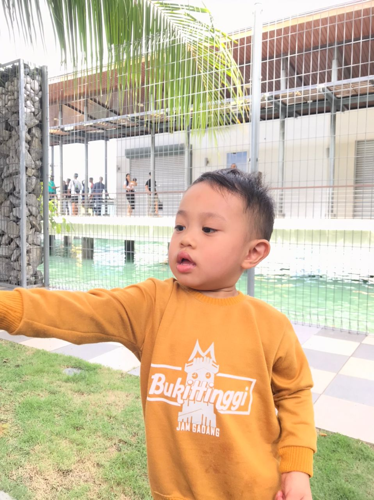

My Baba

This is my father. His name is Muhyidin Bin Mustapa. My father was born in Kelantan on November 3. My father's nickname is 'Baba'. Baba is the fifth child out of 14 siblings. Baba's siblings consist of 10 boys and 4 girls. My dad migrated to Selangor due to work demands. Before Baba's retirement, Baba worked in the preaching department at JAKIM. Baba once wrote a novel titled "Liku." Baba is a degree graduate from UNIMAS in theatre drama. Baba is a very loving and patient person when it comes to educating me and my siblings. Baba didn't come from a rich family. So Baba always said, "Learn really well to secure the future so that you don't live hard in the present age, which is very different from Baba's time." I want to say something for Baba: "Baba, thank you for raising us so patiently. Thank you for going through various challenges to raise us.".
My Umi

This is my mother. Her name is Saadah Binti Daud. My mother was born in Kelantan on November 23. My mother's nickname is 'Umi'. Umi is the youngest of three siblings, all girls. Umi does not work; she is only a housewife. Before Umi was sick, Umi and Baba always got food orders. The food cooked by Umi is very delicious. Umi and Baba always work hard to provide for the four of us because of the increasing factors of life. Umi always gives advice that I should always remember, "If there is a problem, complain to Allah SWT, because that is the most peaceful and safe place to express it. Not today he will help, but the day to come he willl help."Umi, I have a message for Umi: "Umi, thank you for giving birth to the four of us by caesarean. It must be very painful, but Umi is happy to see us grow up perfectly. Umi, thank you. Our life is perfect. Don't stop giving advice, because one day your advice will be very useful for your children.
My Siblings



These are my siblings. I am the third child of four siblings. I have 2 brothers: Muhammad Abdul Hakim Hanis on the right side of the picture is the first child, and Muhammad Abdul Basit Banin on the left side of the picture is the second child, and the last one is my younger sister, NoorDina Aisyah. I also have two sisters-in law. heavy on each other.
My Nieces



I have 3 nieces, 2 boys and 1 girl. Muhammad Raziq, Muhammad Fawwaz Mikael and Rania Delisha.
{kind=link}